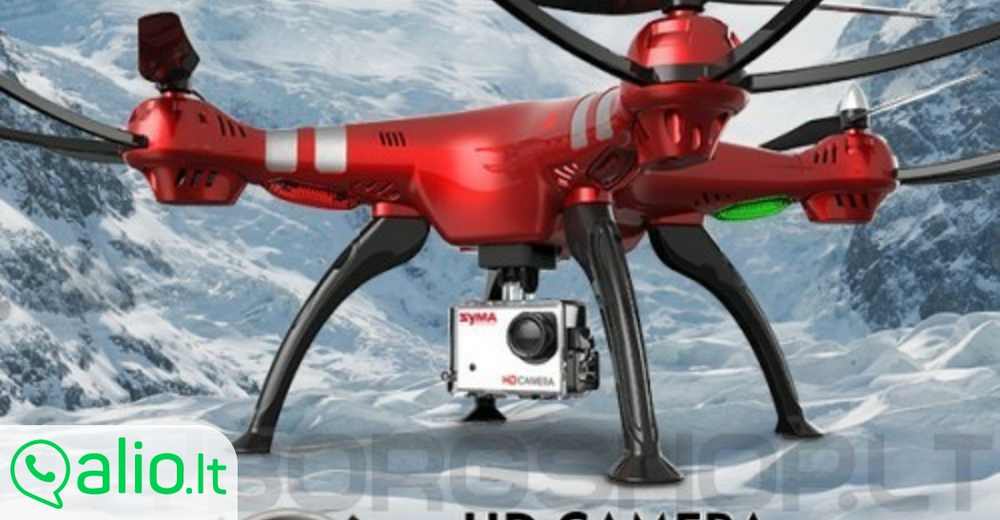

Welcome to Dronai
Dronai Pro veiklos kryptys: dronų parduotuvė, dronų mokymai bei servisas
2020.10.29 07:48Bepilotės skraidyklės bet kokiai užduočiai Facebook Email Instagram YouTube SUSISIEKITE +37069500033 SUSISIEKITE +37069500033 Prisijungti / Registruotis 0 items / € 0.00 Meniu 0 items / € 0.00 Naršyti kategorijas Energetika Filmavimas Geodezija Infrastruktūra Miškininkystė Pramogos Viešasis saugumas Statyba Žemės ūkis Parduotuvė Paslaugos Mokymai Ar jūsų dronas yra pasirengęs skristi Kaip paruošti savo ANAFI droną pirmam skrydžiu Mokymasis skristi su Parrot ANAFI dronų Servisas Pix4D Apie mus Kontaktai TINKLARAŠTIS PAGALBA Dronai Pro bepiločių technologijų integratorius
Pagrindinės veiklos kryptys
Pramoninių sprendimų, pagrįstų dronų technologija, kūrimas ir įgyvendinimas, paslaugų, susijusių su dronų naudojimu, teikimas bei duomenų, gautų dronų pagalba, apdorojimas.
Techniniai sprendimai
Naudojami draudimo įmonių veikloje, geodezijoje, topografijoje, naftos ir dujų pramonėje, reaguojant į ekstremalias situacijas, archeologijoje, infrastruktūroje ir kt.
Pilotavimo įgūdžiai
Dronai Pro vykdo įvairių krypčių mokymus dronų pilotavimo bei duomenų apdorojimo srityse. Kiekvieną mokymų kursą sudaro praktinis ir teorinis modulis, skirtas individualiems mokymams.
Dronai Pro efektyvumas
Tai specializuotas dronų centras, kuriame galėsite įsigyti droną, jį suremontuoti, o tai pat pasinaudoti mūsų pilotų paslaugomis, Jūsų iškeltų užduočių įgyvendinimui.
SUSISIEKITE PARDUOTUVĖ Dronai PRO teikia inovatyvias paslaugas įvairiose ūkio bei pramonės srityse kartu su patikimu parteriu.Apie mus turite žinoti:
Vystome dronų sferą.Mes prisidedame prie robototechnikos vystymo Lietuvoje. Savo išteklius investuojame į prekių asortimentą ir mokymų informaciją bei šios svetainės kūrimą.
Тik kokybiškos prekės.Mes koncentruojames į patikrintų gamintojų , kurie nuolat tobulina savo produkciją, modelių prekybą. Mes prekiaujame tik kokybiška, Jums naudinga produkcija.
Profesionalios konsultacijos.Mūsų konsultantai padės Jums išsirinkti modelį, kurio parametrai atitiks visas sąlygas, kuriose jam teks veikti. Mes gerbiame Jus ir Jūsų pinigus!
Oficiali garantija ir aptarnavimas.Mes parduodame tik sertifikuotas prekes. Mūsų aptarnavimo centro darbuotojai puikiai išmano savo darbą ir teikia profesionalias paslaugas.
SUSISIEKITEApie
Filmavimas, geodezija, teritorijų vystymas, infrastruktūros tikrinimas, aplinkos stebėsena, žemės ūkio darbai ir visuomenės saugumas vykdomi efektyviau, naudojant dronus.
Ulonų g. 3, Vilnius+370 695 000 33
info@dronai.pro
Naujienos
JAV siuntų pristatymas komerciniais dronais šiemet pagaliau bus realizuotas
25 sausio, 2020Skywatch.AI ir „Parazero“: dronų pilotai taupo pinigus draudimui, naudodami saugos sistemas
22 sausio, 2020Informacija
Taisyklės drono pilotui Pirkimo taisyklės Privatumo politika Atsiskaitymas Garantija Grąžinimas LeidimaiRekvizitai
Įmonė: Dronai Pro, UAB
Įmonės kodas: 302576873
PVM kodas: LT100007816513
Adresas: Ulonų g.3, LT-08240 Vilnius
Telefonas: + 370 695 000 33
Žymos
agrodronai dronai dronas dronas su termovizija profesionalus dronai 2017 X Dronai Pro . Visos teisės saugomos. Meniu Kategorijos Energetika Filmavimas Geodezija Infrastruktūra Miškininkystė Pramogos Viešasis saugumas Statyba Žemės ūkis Parduotuvė Paslaugos Mokymai Servisas Apie mus Patarimai Ar jūsų dronas yra pasirengęs skristi Kaip paruošti savo droną pirmam skrydžiu Mokymasis skristi su Anafi dronų Tinklaraštis Kontaktai Prisijungti / RegistruotisPrekių krepšelis
UždarytiPRISIJUNGTI
Uždaryti Dar nėra paskyros? SUKURTI PASKYRĄ Scroll To Top Šioje svetainėje naudojami slapukai. Naršydami šią svetainę sutinkate su mūsų slapukų naudojimu. Daugiau Sutinku